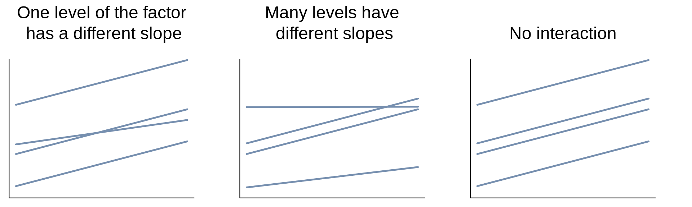
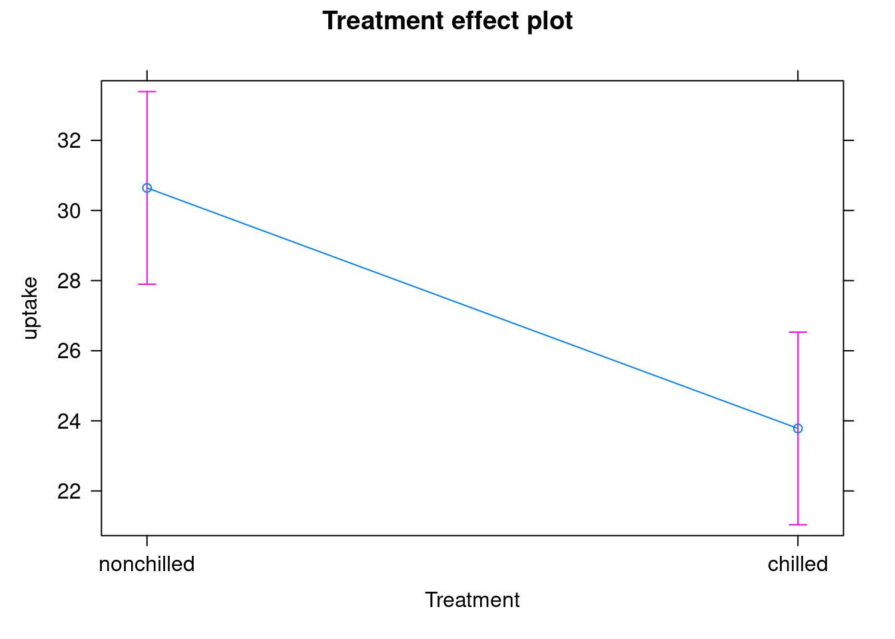
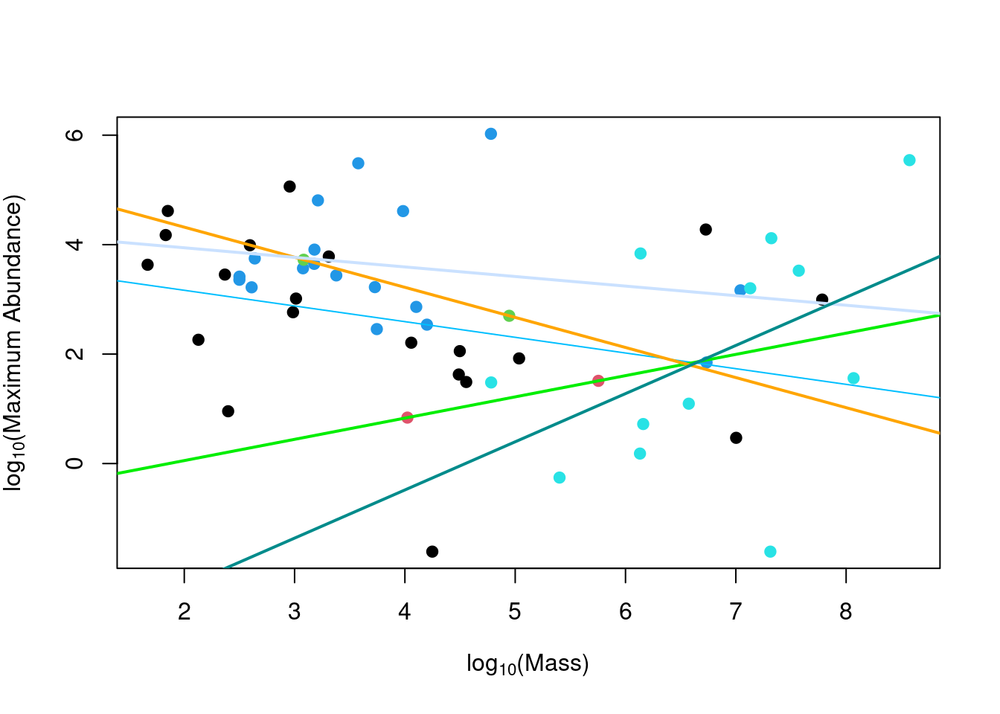

Chapter 6 Analysis of covariance (ANCOVA)

Analysis of covariance (ANCOVA) is a linear model that tests the influence of one categorical explanatory variable (or more) and one continuous explanatory variable (or more) on a continuous response variable. Each level of the categorical variable is described by its own slope and intercept. In addition to testing if the response variable differs for at least one level of the categorical variable, ANCOVA also tests whether the response variable might be influenced by its relationship with the continuous variable (called the covariate in ANCOVA), and by any differences between group levels in the way that the continuous variable influences the response (i.e. the interaction). The ANCOVA hypotheses are thus: that there is no difference in the mean among levels of the categorical variable; there is no correlation between the response variable and the continuous explanatory variable; there is no interaction between the categorical and continuous explanatory variables.
\(Y = X * Z\)
where: \(Y\): Response variable is continuous \(X\): Explanatory variable is categorical \(Z\): Explanatory cariable is continuous
\[Y = \mu + Main Effect Factors + Interaction between Factors + Main Effect Covariates + Interactions between Covariates Factors + \epsilon\]
6.0.1 6.1 Assumptions
As with models seen above, to be valid ANCOVA models must meet the statistical assumptions of linear models that can be verified using diagnostic plots. In addition, ANCOVA models must have:
- The same value range for all covariates
- Variables that are fixed
- No interaction between categorical and continuous variables (not colinear)
Note: A fixed variable is one that you are specifically interested in (i.e. bird mass). In contrast, a random variable is noise that you want to control for (i.e. site a bird was sampled in). If you have random variables, see the workshop on Linear And Generalized Linear Mixed Models!
6.0.2 6.2 Types of ANCOVA
You can have any number of factors and/or covariates, but as their number increases, the interpretation of results gets more complex.
The most frequently used ANCOVAs are those with:
- one covariate and one factor
- one covariate and two factors
- two covariates and one factor
The different possible goals of the ANCOVA are to determine the effects of:
- the categorical and continuous variables on the response variable
- the categorical variable(s) on the response variable(s) after removing the effect of the continuous variable
- the categorical variable(s) on the relationship between the continuous variables(s) and the response variable
Importantly, these goals are only met if there is no significant interaction between the categorical and continuous variables! Examples of significant interactions between the categorical and continuous variables (for an ANCOVA with one factor and one covariate) are illustrated by the second and third panels below:

If the interaction is significant, you will have a scenario that looks like the left and middle graphs. If your covariate and factor are significant, outputs will look like the left graph. The same logic follows for ANCOVAs with multiple categorical and/or continuous variables.
6.0.3 6.3 Running an ANCOVA
Running an ANCOVA in R is comparable to running a two-way ANOVA, using
the function lm. However, instead of using two categorical variables
(Diet and Aquatic), we now use one categorical and one continuous
variable.
For example, using a build in dataset called CO2, where the response variable is uptake, the continuous variable is conc and the factor is Treatment, the ANCOVA is:
## Analysis of Variance Table
##
## Response: uptake
## Df Sum Sq Mean Sq F value Pr(>F)
## conc 1 2285.0 2284.99 28.5535 8.377e-07 ***
## Treatment 1 988.1 988.11 12.3476 0.0007297 ***
## conc:Treatment 1 31.9 31.87 0.3983 0.5297890
## Residuals 80 6402.0 80.02
## ---
## Signif. codes: 0 '***' 0.001 '**' 0.01 '*' 0.05 '.' 0.1 ' ' 1If only your categorical variable is significant, drop your continuous
variable from the model: you will then have an ANOVA.
If only your continuous variable is significant, drop your categorical
variable from the model, you will then have a simple linear
regression.
If your interaction is significant, you might want to test which levels
of your categorical variables ha(s)ve different slopes and to question
whether ANCOVA is the most appropriate model.
In the CO2 example above, both the continuous and categorical variable
are significant, but the interaction is non-significant. If your replace
Treatment with Type, however, you will see an example of a
significant interaction.
To compare the mean values of each factor, conditional on the effect of the other
The effects::effect() function uses the output of the ANCOVA model to estimate the means of each factor level, corrected by the effect of the covariate

CHALLENGE 4
Run an ANCOVA to test the effect of Diet, Mass, and their
interaction on MaxAbund.
Response variable: MaxAbund
Explanatory variables:
-Diet (factor with 5 levels)
-Mass (numeric, continuous)
## 'data.frame': 54 obs. of 9 variables:
## $ Family : chr "Hawks&Eagles&Kites" "Long-tailed tits" "Larks" "Kingfishers" ...
## $ MaxAbund : num 2.99 37.8 241.4 4.4 4.53 ...
## $ AvgAbund : num 0.674 4.04 23.105 0.595 2.963 ...
## $ Mass : num 716 5.3 35.8 119.4 315.5 ...
## $ Diet : Factor w/ 5 levels "Insect","InsectVert",..: 5 1 4 5 2 4 5 1 1 5 ...
## $ Passerine : int 0 1 1 0 0 0 0 0 0 0 ...
## $ Aquatic : int 0 0 0 0 1 1 1 0 1 1 ...
## $ logMass : num 6.57 1.67 3.58 4.78 5.75 ...
## $ logMaxAbund: num 1.09 3.63 5.49 1.48 1.51 ...Cliquez pour voir la solution au Défi 3!
# If you did the section on Contrasts above, you will need
# to reset the contrast to Treatment for ease of comparison
# using the ''options()'' function Otherwise, skip the
# first line of code below
options(contrasts = c("contr.treatment", "contr.poly"))
# solution
ancov1 <- lm(logMaxAbund ~ logMass * Diet, data = bird)
anova(ancov1)## Analysis of Variance Table
##
## Response: logMaxAbund
## Df Sum Sq Mean Sq F value Pr(>F)
## logMass 1 10.464 10.4637 4.6054 0.03743 *
## Diet 4 17.749 4.4372 1.9530 0.11850
## logMass:Diet 4 15.805 3.9513 1.7391 0.15849
## Residuals 44 99.971 2.2721
## ---
## Signif. codes: 0 '***' 0.001 '**' 0.01 '*' 0.05 '.' 0.1 ' ' 1##
## Call:
## lm(formula = logMaxAbund ~ logMass * Diet, data = bird)
##
## Residuals:
## Min 1Q Median 3Q Max
## -4.1308 -0.7081 -0.0855 0.9854 2.5694
##
## Coefficients:
## Estimate Std. Error t value Pr(>|t|)
## (Intercept) 3.7384 0.8042 4.648 3.05e-05 ***
## logMass -0.2865 0.1934 -1.481 0.1457
## DietInsectVert -4.4599 6.1652 -0.723 0.4733
## DietPlant 1.6796 4.7819 0.351 0.7271
## DietPlantInsect 0.5537 1.3860 0.400 0.6914
## DietVertebrate -7.7409 2.9359 -2.637 0.0115 *
## logMass:DietInsectVert 0.6745 1.2463 0.541 0.5911
## logMass:DietPlant -0.2631 1.1602 -0.227 0.8216
## logMass:DietPlantInsect 0.1115 0.3427 0.325 0.7465
## logMass:DietVertebrate 1.1665 0.4556 2.561 0.0140 *
## ---
## Signif. codes: 0 '***' 0.001 '**' 0.01 '*' 0.05 '.' 0.1 ' ' 1
##
## Residual standard error: 1.507 on 44 degrees of freedom
## Multiple R-squared: 0.3057, Adjusted R-squared: 0.1637
## F-statistic: 2.153 on 9 and 44 DF, p-value: 0.04469In this case, the interaction term is not significant, meaning that the effect of logMass on logMaxAbund does not differ between Diet groups. The interaction term can thus be dropped, and the ANCOVA model becomes:
Because the R output shows that diet is also non-significant, this term is dropped, and the final model corresponds to:
The model results can also be graphically represented using a plot of the response variable as a function of the continuous explanatory variable with different point and line colours for the different levels of the categorical variable.
Plot the ANCOVA intercept and slopes (model ancov1 above) using the
abline() and coef() functions.
## (Intercept) logMass DietInsectVert
## 3.7384247 -0.2864726 -4.4598537
## DietPlant DietPlantInsect DietVertebrate
## 1.6795975 0.5537085 -7.7409274
## logMass:DietInsectVert logMass:DietPlant logMass:DietPlantInsect
## 0.6744893 -0.2631444 0.1114568
## logMass:DietVertebrate
## 1.1665348plot(logMaxAbund ~ logMass, data = bird, col = Diet, pch = 19,
ylab = expression("log"[10] * "(Maximum Abundance)"), xlab = expression("log"[10] *
"(Mass)"))
abline(a = coef(ancov1)[1], b = coef(ancov1)[2], col = "deepskyblue1")
abline(a = sum(coef(ancov1)[1] + coef(ancov1)[3]), b = sum(coef(ancov1)[2] +
coef(ancov1)[7]), col = "green2", lwd = 2)
abline(a = sum(coef(ancov1)[1] + coef(ancov1)[4]), b = sum(coef(ancov1)[2] +
coef(ancov1)[8]), col = "orange1", lwd = 2)
abline(a = sum(coef(ancov1)[1] + coef(ancov1)[5]), b = sum(coef(ancov1)[2] +
coef(ancov1)[9]), col = "lightsteelblue1", lwd = 2)
abline(a = sum(coef(ancov1)[1] + coef(ancov1)[6]), b = sum(coef(ancov1)[2] +
coef(ancov1)[10]), col = "darkcyan", lwd = 2)